MapNG
MapNGThis one is a big one. Much of it came straight from your reports in the Discord: Alpine maps that needed better lakes, rock and galleries, people who wanted to draw only the part of a map they'd drive, and a 3D preview that was overdue for some love. Here's what changed.
🗺️ Background areas: shade what you won't drive
Most maps have parts you'll never drive: the far side of a ridge, a forest between two valleys, the hills round a town. Now you can tell MapNG. In Location → Background areas, draw a line or two across the box and shade the closed areas you don't need. Background keeps its real shape, so the level still looks right from the road, but it gets no buildings, trees, grass or props, and its data downloads at lower detail. Levels come out lighter and faster to build and to drive.
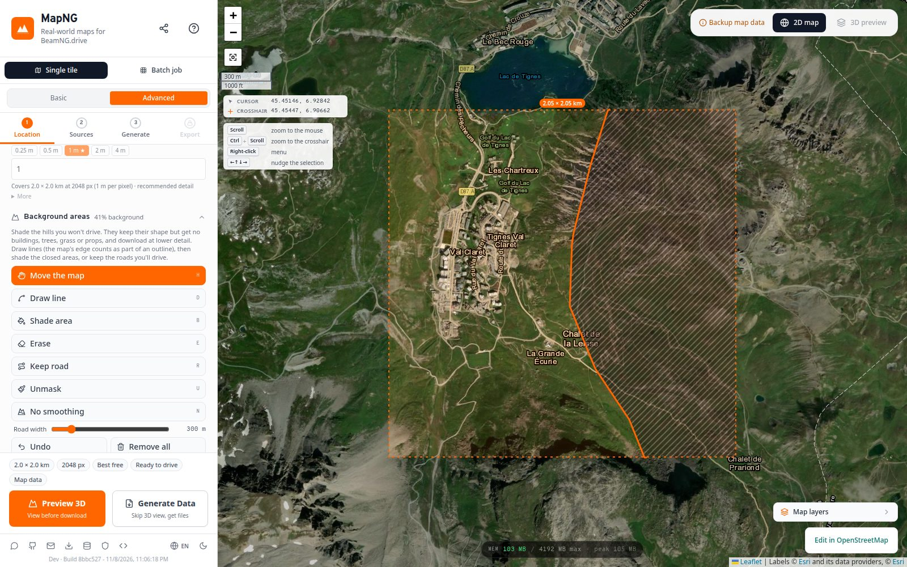
- Draw line from edge to edge, or a closed loop. The map's edge counts as part of an outline.
- Shade area makes a closed area background. Click again to make it drivable.
- Keep road the other way round: pick the roads you'll drive, and everything farther than the road width becomes background.
- Unmask paints background back to drivable with a brush, a box or a lasso.
No smoothing areas
The same panel has a No smoothing brush: paint where roads should keep the terrain exactly as the elevation data has it, with no smoothing or levelling. Handy for rally stages, rough tracks and mountain roads where the bumps are the point.
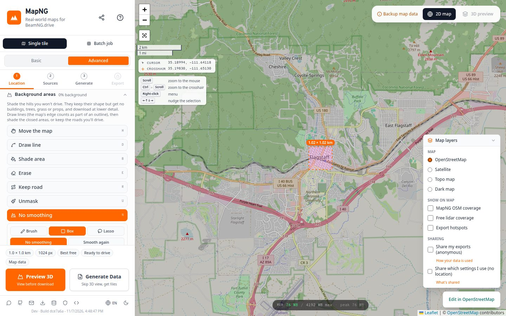
🌊 Water out to the horizon
With the surrounding backdrop on, the land carried on past your map, but its lakes stopped dead at the map's edge, and the backdrop showed the rest as a flat satellite photo. Now the lakes, ponds, reservoirs and rivers round the map are built out to the backdrop's edges too, at the same level as the map's own water. A lake that runs off the map simply carries on. (Turn water off, or draw background areas, and this is skipped.)
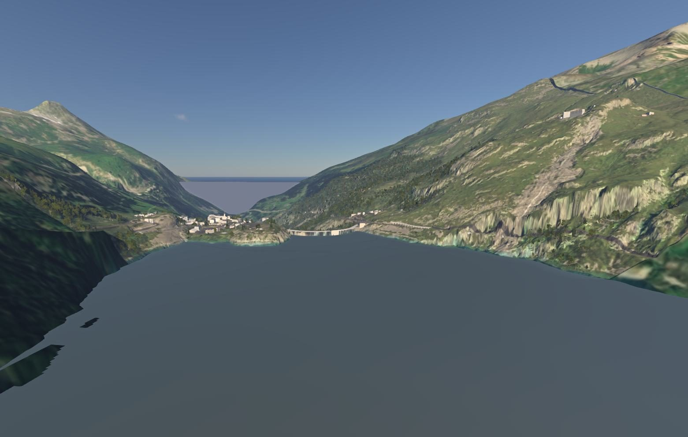
Behind the scenes: the water round the map is downloaded with the backdrop, planned the same way as the map's own (each lake at its level, rivers as river surfaces), and a lake crossing the edge takes the map's level and reaches 70 m into the map, so no dry strip shows between the two.
Lake beds with real depths
Lakes used to be a shallow 1.5 m pan under the water. Now a lake's bed gets deeper with distance from its shore, the way real lake beds do, with the maximum depth estimated from the slope of the land round it (or from OpenStreetMap's depth tags where they exist). Reservoirs know where their dam is and are deepest against it. Lac du Chevril comes out at 115 m at its deepest. Big lakes beside a road tunnel no longer lose half their water either.
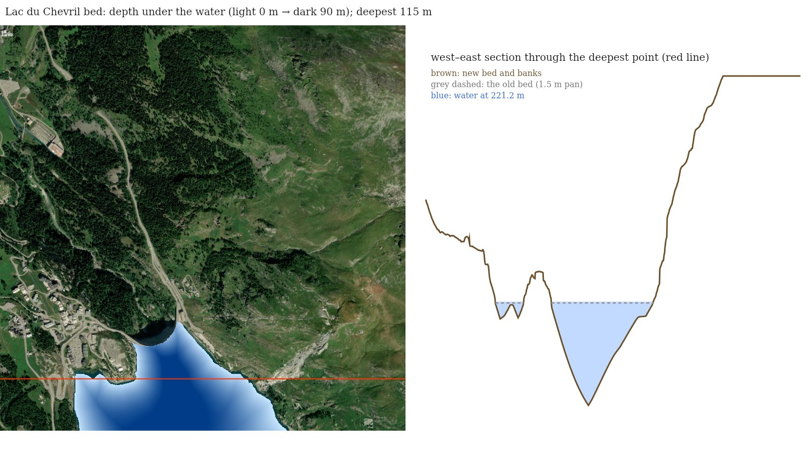
Land below sea level stays dry
Dutch polders and other land behind dykes sit below sea level, and MapNG used to flood all of it with one sea plane at 0 m. Now the sea only comes in where the open sea can actually reach, from the coastline or the map's open-water edges.
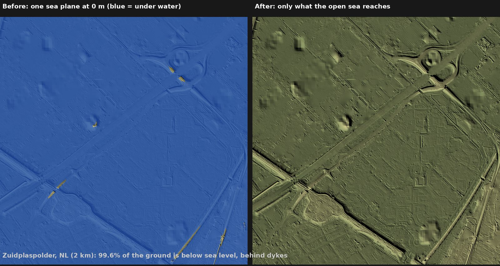
🏔️ Mountains that look like mountains
The Game texture, rebuilt for mountains
The Game texture (the base texture painted from land cover) had baked-in hill shading that fought with the game's own lighting, and big flat blotches of "rock" where the land-cover data guessed wrong. Now the shading is taken out, each class is checked against ESA WorldCover, rock and scree come back only where the satellite shows them, and the satellite's fine detail is blended in.
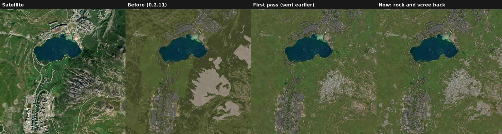
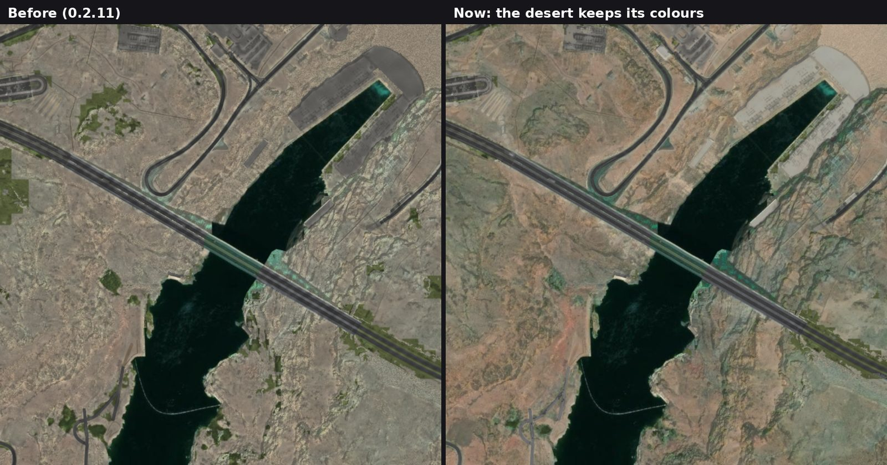
Avalanche galleries
Mountain roads often run through avalanche galleries: a roof over the road, open on the valley side, with the mountain behind. MapNG built the uphill side as a concrete wall standing in front of the hillside. Now the hillside itself is the gallery's back, graded up to its roof, as in the real thing. You can see one in the photo at the top of this page.
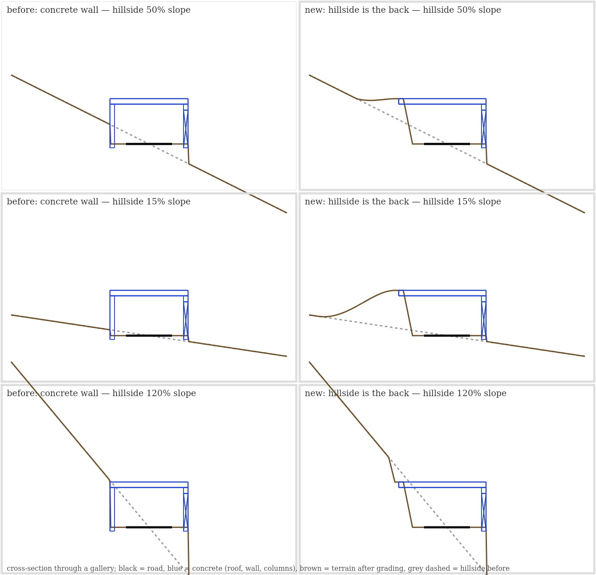
Forest density
In Advanced mode you can now choose how thick forests grow: Light, Normal, Dense or Very dense.
⚡ Exports that only redo what changed
Exporting used to download things and rebuild everything every time, even when you'd only changed the tree density. Three changes fix that.
1. The export downloads nothing
Everything a level needs is fetched up front: the map data and land cover when you click Generate, and the extras your export settings ask for (the surrounding backdrop, the water round the map, measured bridge heights) in the background as soon as you pick them. It all goes into one download cache: up to 1.5 GB in the browser, kept on disk in the desktop app. The export itself only processes, so it's faster, and it can't fail halfway through on a flaky download.
2. Check level, and a step cache
Click export again without changing anything and you now get Check level instead of a rebuild: it checks the zip you already have against your settings and tells you it's up to date (Rebuild anyway is there if you want it). Change one setting and the export reuses every slow step that setting doesn't touch: the surrounding backdrop, the buildings and the terrain materials are kept from the last export and only the rest is built again. Modify and Update in the desktop app's levels list work the same way.
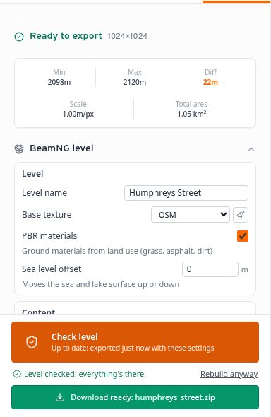
3. Export history and cleaner saved projects
The desktop app now keeps a history of your exports (Last exports in the levels list), with the settings each one used, and saved projects no longer store your API keys: the app's own keys are used when you rebuild or modify a level.
🎬 A 3D preview that pops
The preview had been neglected for a while apart from speed work. It's had a proper going-over.
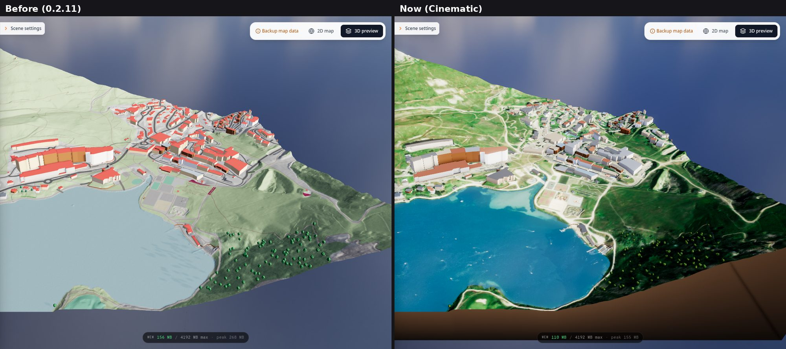
- Visual quality: Cinematic (Scene settings) adds soft shadow in valleys and round buildings, a gentle glow, haze into the distance, richer colour, real lake water and earth-coloured sides under the map. Standard stays light for weaker graphics cards, and is picked automatically when there's no graphics card to speak of.
- Shadows that work. Buildings, trees and props were lit about four times too brightly and their shadows were a jumble; the terrain cast no shadows at all. Now one sun casts shadows from everything, mountains shade their valleys, and the shadows sharpen as you zoom in.
- Real trees. A short trunk under a full, lumpy crown, and tiered conifers, in natural greens and at real sizes (6 to 9 m) instead of big gem-cut balls on 6 m sticks.
- Opens faster. The sky image went from 20 MB to 1.4 MB (Standard) or 5.4 MB (Cinematic), and in our tests opening the preview froze the page for less than half as long as before.
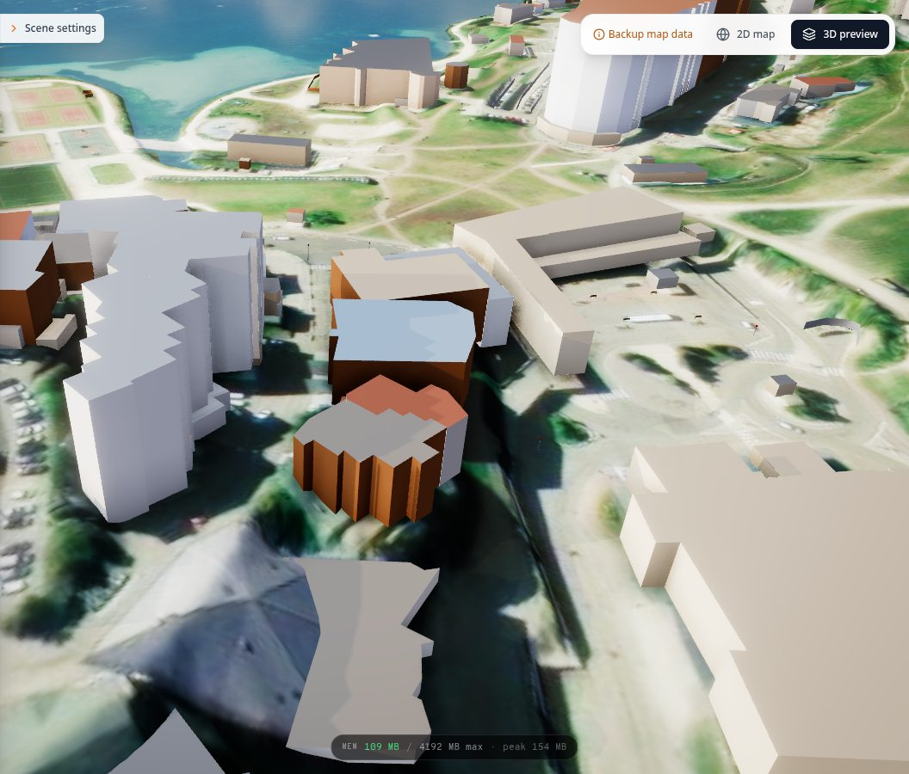
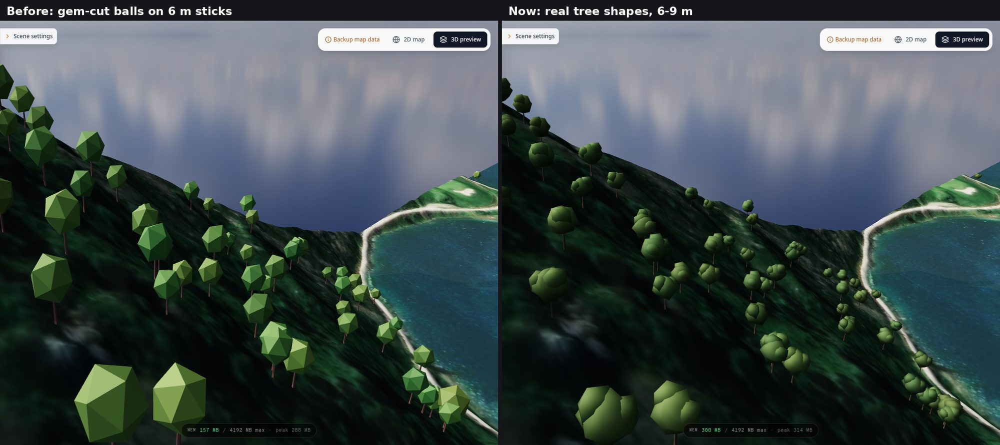
New: Terrain view
To see the shape of the land you used to set the texture to None. Now Scene settings → Terrain view has proper options. Relief is plain clay lit by the sun: the shape and nothing else. Slope colours the ground by steepness, from flat green through yellow (12°) and red (30°) to purple (40° and up), so you can see at a glance where a car will climb. Height colours it from valley to summit. Add contour lines to any of them; the spacing is picked from your map's relief, with every fifth line bold.
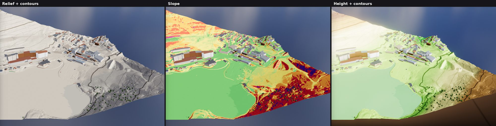
The MapNG flag, on the summit
Every level has a MapNG flag on its highest point, and the preview shows where it'll stand. Sometimes it floated in mid-air or hung on the edge of the map. It now ignores one- and two-pixel spikes in the elevation data (masts, odd lidar returns), and goes on the highest real hilltop inside the map instead of the edge where the land rises off it. In the level it stands exactly on the terrain.
🧹 More fixes and polish
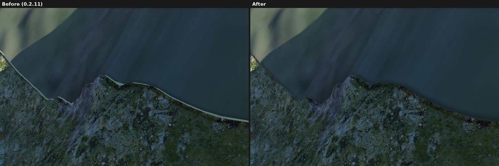
🙏 Thanks
Thanks to everyone testing and sending feedback in the Discord, especially Fizz_Mechanic for the long lists of Alpine reports and SailorSunny405 for the background-areas ideas. Map data © OpenStreetMap contributors. Land cover from ESA WorldCover. Satellite imagery © Esri and its data providers. The preview sky is Kloofendal 48d Partly Cloudy (Pure Sky) from Poly Haven (CC0).
Heads-up: the Windows build still isn't code-signed. If SmartScreen warns you, choose More info, then Run anyway.
Try background areas on a big map, open the preview's Slope view on your favourite mountain road, and tell me what you see. Post in the MapNG Discord or open a GitHub issue. 🧡